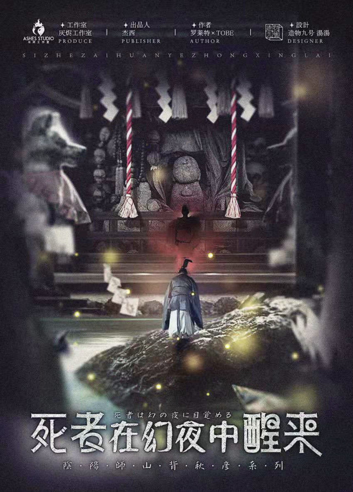

候補シナリオ
現在ローカライズを進めている作品です。正式決定次第、上のシナリオ一覧に移動します。

『幻想の諸因』（げんそうしょいん）
かすかに明滅する灯り。 錆びつき、朽ち果てた氷の宮殿。 7人は迷宮の中で目を覚ます。 そこは見知らぬ閉鎖空間。記憶は失われ、それぞれが疑念を胸に抱いていた。 そのとき、一人の熱意に満ちた声が響く。 「皆様、ようこそ《チェスタークラブ》へ。 久しぶりですね。異国の地・青海市で再びお会いできたことを、大変うれしく思います。 本日は、《チェスタークラブ》恒例イベント――『生死を賭けた探索』にご参加いただきます。皆様のご健闘を期待しております。」 しかし、その場から逃れる術はない。 そして何より恐ろしいのは――最も危険な人物が、この7人の中に紛れ込んでいること。 「それでは、ゲームを始めましょう。 皆様の命を賭け金とし、論理と推理で謎を解き明かしてください。 生と死を懸けた探索の幕が、今、上がります。」

『漓川怪談簿』（りせん かいだんぼ）
常世は、この地の名であると同時に、土地の中央に広がる不気味な湖の名でもある。 古くから、この地の水と土は人々の暮らしを育むだけでなく、数え切れないほどの怪談に語り継がれる妖や怪異を生み出してきたと伝えられている──。

『死者は幻夜に目覚める』（ししゃは げんやに めざめる）
川には、無数の灯火を乗せた紙舟が浮かび、 揺れる水面の上で、まるで夜空に散る星々のように淡く瞬いていた。 果ての見えないその川は、やがて彼岸へと流れ着くという。 人々は信じている。 もし灯火を宿した紙舟が無事に川の果てへ辿り着くことができたなら、この世とあの世――二つの世界に隔てられた者たちは、幻夜の中で再び巡り会えるのだと。 しかし、一葉の小舟は波に翻弄され、 多くの紙舟は激しい流れに呑まれ、そのまま川底へと沈んでゆく。 灯火は消え、 紙舟を折った者だけが、なおも帰らぬ人を待ち続ける。 私たちは幾度となく川を遡ろうとする。 ただ、手の届くはずもない、あの儚き彼岸へ辿り着くことを願って――。 ――『未見村民間物語』より

『ロンドンの薔薇を盗み尽くす』
一夜にして、ロンドン中の薔薇が姿を消した。 誰がすべての薔薇を盗み去ったのか。 なぜ薔薇でなければならなかったのか。 その答えを知る者は、誰ひとりいない。 同じ頃、開業したばかりのフィールホテルには、六人の宿泊客が集っていた。 初めてこのホテルを訪れた彼らは、一見すればどこにでもいるような普通の人々。 だが、その誰もが、人には語れない不可思議な物語を胸に秘めていた――。 世界は狭い。 約70億もの人々が暮らしているのだから、いつかきっと、あなたのためならすべてを捨てるほど狂おしく愛してくれる誰かに出会えるだろう。 けれど世界は、あまりにも広すぎる。 広すぎるがゆえに、その「約70億人」という枠組みの中ですら、決して語ることのできない存在がいる。 才能が枷となり、 時間が呪いとなるとき―― 彼らの愛は、いったいどのような姿をしているのだろうか。